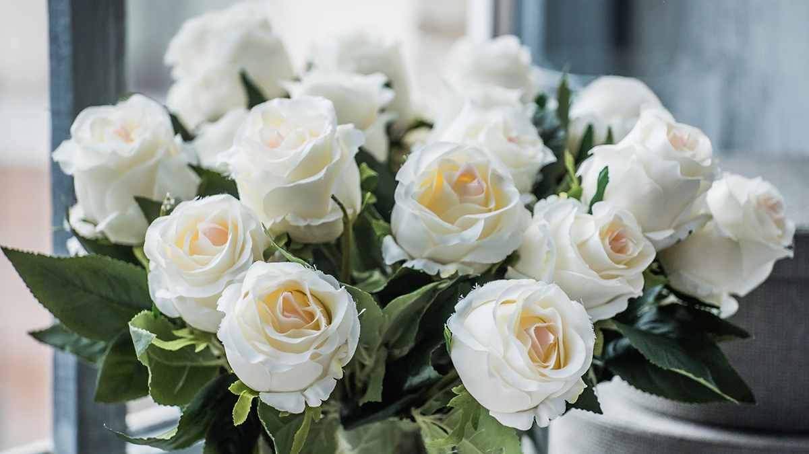

Is there any flower more abundant in sensory overload than a rose? Good looks, delicious scent, wonderful for cutting, easy to grow (so long as you give them a good mulch every winter, for they are hungry plants), and, depending on which you choose, a long and glorious flowering season. Few perennials can stop you in your tracks like a mature rose in full bloom rambling over an aged outbuilding or climbing up the walls of a country house—or any other house for that matter. Roses pretty much tick all the boxes.
But for all their good points, roses also may seem like complicated plants to understand. For a start, there are more than a hundred species, which have thousands of varieties in almost as many colors, all of which seem to have slightly different habits and requirements—and if you are choosing roses, it’s very much a case of selecting the right plant for the right place.
Where to start? Most roses are either shrubs, ramblers, or climbers (and to add to the confusion, some shrub roses can also be trained to grow as a climber). Roses are woody perennials with stems that do not die back in winter—and over the years, those stems will look more like gnarly branches (and will weigh far more than soft stems, requiring a sturdy support if your rose is a climber).
Read on to learn everything you need to know about different kinds of roses, how to select the best rose for your landscape, and how to make sure it thrives after your plant it.
